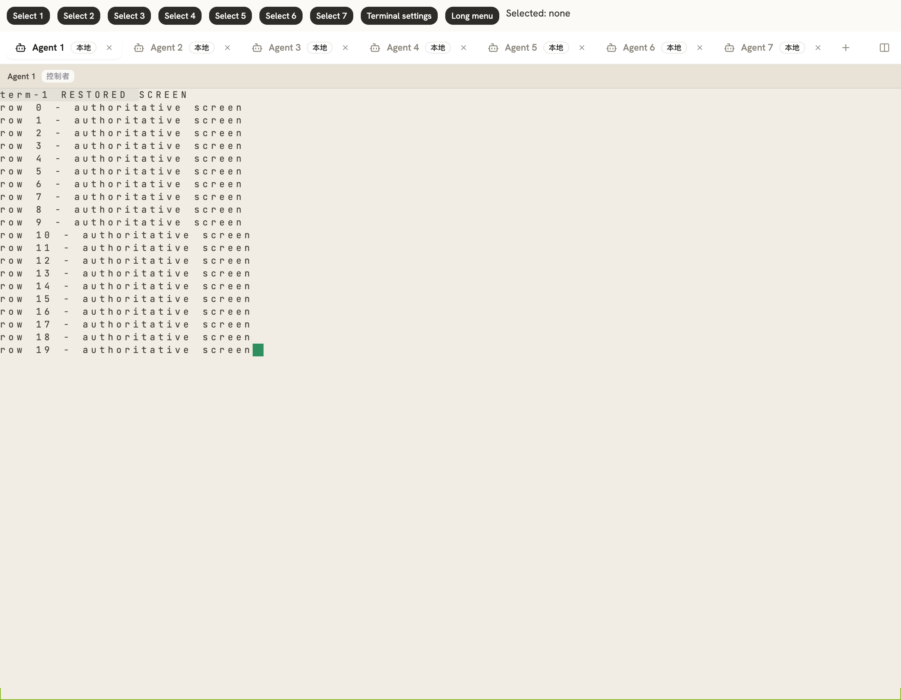
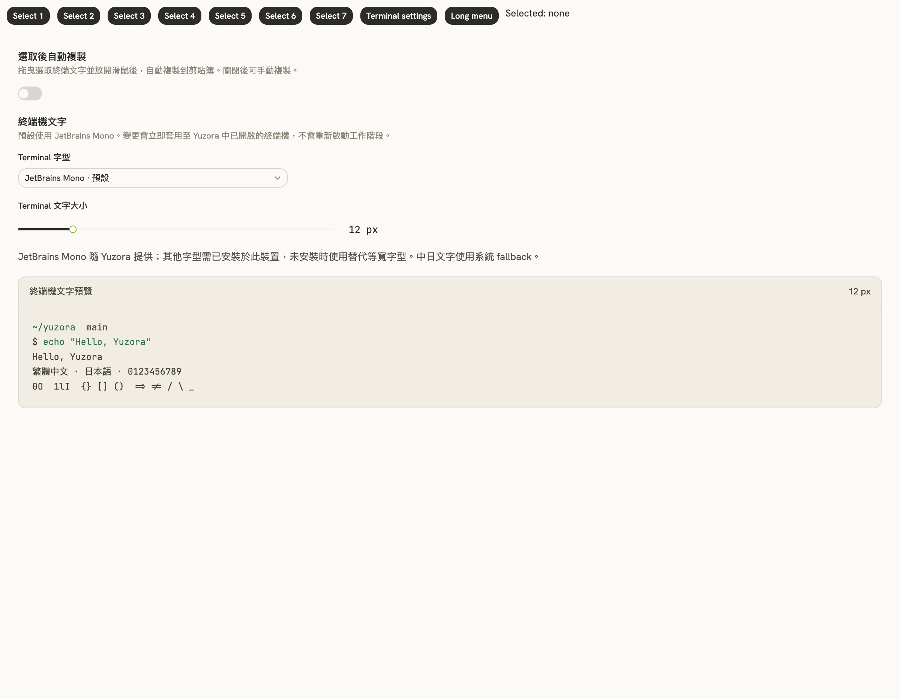
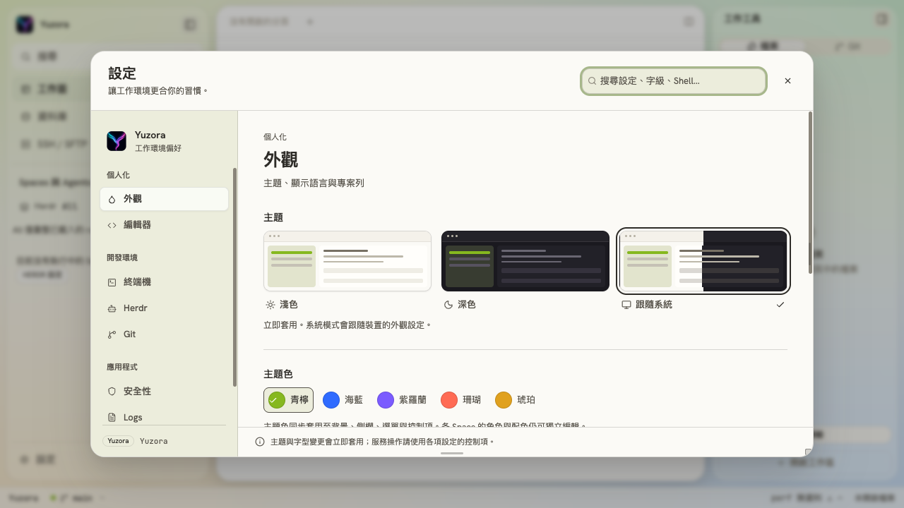
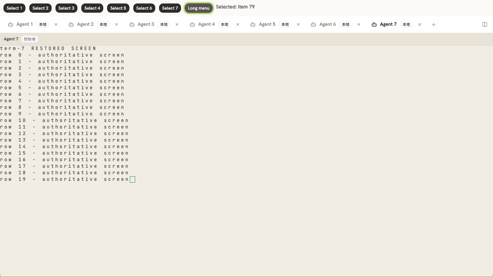

v0.0.9：檔案、終端與效能修正
已從 release/v0.0.9-beta.3 建立並切到 release/v0.0.9，保留原有修改、刪除及未追蹤檔案。此次修正包含品牌圖示、信任 challenge、WSL 檔案管理員、非 Git 目錄、終端完整畫面恢復、捲動元件與背景成本。未執行 staging、commit 或 push。
需求與結果
| 項目 | 改動與證據 |
|---|---|
| 目前的 Logo | 標題列、設定頁、啟動畫面與 favicon 統一使用目前隨 App 發布的 Yuzora 圖示（src-tauri/icons/128x128.png）；移除原先 y. 文字標誌與 Vite favicon。前端以同一份 public/yuzora.png 提供圖片。 |
| 第一次信任報錯 | 最小 Rust 重現證實：顯示確認視窗後，背景 status／Git 權限查詢撤銷原 challenge，確認得到 staleChallenge。同一目錄、同一 filesystem identity 現在沿用未到期 challenge，且不延長時限；一次性、撤銷、目錄替換與跨程序持久化測試保留。 |
| WSL 在檔案管理員顯示 | 原先把 yuzora-fs:// 文件 URI 傳給本機 opener。現在依已連線的 host identity 與 WSL 發行版轉成 \\wsl.localhost\發行版\路徑，保留中文與空格。SSH／未連線或無法對應的遠端主機停用此動作，不把遠端 URI 當作本機檔案。 |
| Windows 新 Space 出現 PowerShell provider 路徑（追加） | 建立 Space 時，Windows canonical 路徑 \\?\C:\... 曾直接傳入 HERDR，PowerShell 因而顯示 Microsoft.PowerShell.Core\FileSystem::。在 HERDR 啟動目錄邊界改用一般磁碟機／UNC 路徑；只在兩種寫法 canonicalize 後指向同一個實際目錄時轉換，保留 workspace／trust 原有 identity。新分頁與分割終端的明確 cwd 也走相同流程。Unix／WSL 目錄不改寫；Windows 原生實機 prompt 尚待確認。 |
| 非 Git 目錄看不到檔案 | HERDR 0.9.0 的 workspace metadata 只有 Git worktree 能提供根目錄。明確選取 Space／Agent 時，改用所選 Terminal Session 的 pane cwd 作為候選資料夾，通過同主機 canonicalize 與未儲存檢查後載入 Files。既有綁定根目錄優先；背景快照仍不推導根目錄，也不採用 agent integration cwd。 |
| 隱藏終端裁切後畫面異常 | 在丟失增量 ANSI 狀態後，不把殘餘差分畫到舊畫面。切回先釋放並重建該 connector，取得完整 authoritative frame；保留 xterm 與 HERDR terminal／agent 程序，並於重新顯示和寫入完成後重繪。正常切換不重建 connector。真實 xterm fixture 21 次切換、18 次 320 KiB 裁切恢復皆通過，結束時仍為 7 個有效 connector。 |
| Windows 記憶體／受控工具 | 每條 helper lane 的 Tokio worker threads 固定為 2，避免每個終端／watcher／tunnel 依主機 CPU 數各建立完整執行緒池。另降低重複 worktree 掃描與非作用中畫面繪製。下方列出可重現的本機測量；尚未在使用者的 Windows／7 個 WSL agent 上重測 2600 MB。 |
| 統一 shadcn 捲動 | 剩餘 DropdownMenu 原生捲軸改由既有 ScrollArea 提供。80 項長選單能用 End 捲到最後一項，Enter 正確選取 Item 79，native scrollbar 為 none。設定頁的兩個長內容區也確認使用 ScrollArea。source 掃描留下的 overflow-auto 僅為專案允許的 CodeMirror／merge hosts；xterm 與原生 webview 捲動仍由各自 library 管理。 |
| UI 回饋速度 | 終端改為訂閱自身 runtime，20 次其他 runtime 更新不觸發該終端 React commit。agent snapshot 更新沿用同拓樸的 worktree inventory，10 次一般刷新不重掃 Git；拓樸改變、初始化與既有 30 秒週期仍更新。非作用中終端用 visibility:hidden 保持尺寸和實例，停止透明圖層的淡入淡出繪製。 |
追加：HERDR 終端剪貼簿
| 項目 | 修正與驗證 |
|---|---|
| 多行文字逐行送出 | xterm 的本地 bracketed-paste 狀態不能代表 HERDR 內部 agent 的模式；原本 paste 會轉成一般 CR 輸入，輸入佇列也可能將貼上與按鍵合併。改由 transport 將每次貼上送成獨立完整 bracketed-paste frame，統一換行並移除內嵌貼上分隔符。一般打字仍能合併，貼上之間與按鍵之間保持界線，不附加 Enter。保留原有 256 KiB 待送上限、觀察模式與失敗不重播規則。 |
| Option／Alt+V 圖片 | 以實體 KeyV 識別 Option+V（含 macOS 產生 √ 的情況），由原生剪貼簿讀取圖片、轉 PNG，再經 typed helper operation 存到該終端的主機，最後貼入圖片路徑。WSL／SSH 使用對應 connection owner 與 generation；舊 helper 未提供 clipboardImage 時明確報錯。PNG 上限 8 MiB、原生圖片上限 16 Mi pixels；轉換後釋放 canvas 與 native Image resource。DOM PNG 貼上也使用同一路徑。需要讀取圖片的 agent 自身支援圖片路徑。 |
| 選取後自動複製 | 拖曳文字並放開滑鼠後複製一次，保留 xterm 選取反白。預設開啟；可於「設定 → 終端機 → 選取後自動複製」關閉，立即生效並持久保存。關閉後手動 Ctrl／Cmd+C 保留，觀察模式仍能複製。解除元件時移除 listener 與尚未執行的複製工作。 |
| 過期圖片操作 | 在 clipboard read、host staging 與貼入前確認目前終端、可寫狀態及 host generation。圖片傳送途中切換分頁、釋放 connector 或重新連線時，丟棄過期貼上結果。實際瀏覽器延遲 helper 回應後切換 Agent 2，未產生任何 terminal input。 |
實際 xterm 瀏覽器驗證（HERDR IPC 與系統剪貼簿為隔離 fixture）：多行文字只產生一個完整 frame；Alt+V 與 Option+V 各產生一次圖片路徑，沒有 Enter，兩個 native image resource 均關閉。滑鼠拖曳保留反白，放開後複製一次；切換設定關閉後第二次拖曳不再覆寫剪貼簿。Rust built-helper stdio 往返則實際驗證 clipboardImage 方法、PNG 落檔內容與 owner identity。尚未在 Windows／WSL 原機與各家 agent 上驗收圖片辨識。
瀏覽器貼上／選取證據 · 切換期間丟棄圖片結果 · 最終 131 項終端回歸測試


記憶體測量的範圍
macOS 上使用實際建置的 yuzora-host --tcp，同時啟動七條閒置 helper lanes，等待初始化後採樣 RSS 與執行緒，再關閉測試程序。這是 executor 成本對照，不是 Windows 實測，也不是七個活躍 agent 的總占用。
| 指標 | 修改前 | 修改後 |
|---|---|---|
| 7 個 helper 總執行緒 | 91 | 21（減少 70） |
| 7 個 helper 總 RSS | 60,528 KiB（59.1 MiB） | 58,224 KiB（56.9 MiB；減少約 2.3 MiB） |
| 10 次同拓樸 agent snapshot 刷新 | 每次觸發 worktree inventory 查詢 | 0 次額外 worktree 掃描；明確刷新仍有效 |
| 20 次其他 runtime 更新 | 所有訂閱整份 runtime map 的終端會收到更新 | 被測終端 0 次 React commit |
RSS 修改前 · RSS 修改後。Windows 受控工具 106 個與 WebView 1040 MB 的原始場景仍需原機測量，不能以這些數字推算已減少多少。
驗證
- 完整前端 192 個檔案、2,294 項測試通過；最後的輸入邊界修正另跑 131 項終端回歸測試通過。typecheck、production build 與 ESLint：完整日誌附於本報告。ESLint 0 errors、51 個既有 warnings；build 仍有大型 bundle 與既有 dynamic import 提示。
- Desktop：368 個 unit tests、1 個 integration test 通過，4 個原本 ignored tests 未執行。
- Host：369 個 unit tests、11 個 integration tests 通過（test-threads=2）；含 built helper、stdio 圖片往返、filesystem watcher、SQLite lane。先前高併發驗證有兩個啟動 fixture 逾時，獨立重跑及完整低併發重跑皆通過。
- cargo check --locked --all-targets、Rust fmt 及 git diff --check 通過；Clippy exact baseline 90 項吻合。
- 使用本次明確授權的 Playwright 瀏覽器驗證實際 xterm、實際 EditorArea、長選單與設定頁。terminal fixture 模擬 HERDR 傳輸，不連接真實 agent，不代表 Windows 原生／WSL transport 驗收。
前端完整測試 · Build / typecheck · Lint
追加 Windows cwd 修正：路徑與 Unix 保留回歸測試 · HERDR service 測試。另加入 Windows 專用真實目錄 identity 測試，供 Windows CI／原機執行。
畫面證據
目前 Yuzora Logo 與設定頁 ScrollArea：

七終端 fixture 完成切換與裁切恢復後的完整畫面：
